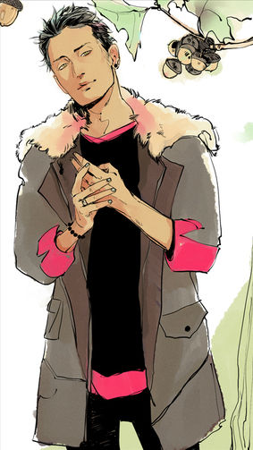

Магнус Бейн

Мое домашнее средство после серьезного истощения магии — горячая ванна, 300 грамм стейка средней прожарки и много алкоголя.
Магнус Бейн - это Верховный Маг Бруклина. Прожив более трехсот лет, он пересекался с несколькими Сумеречными Охотниками и существами Нижнего Мира по истечению веков.
Характер и привычки
Магнус далеко не юн — несмотря на то, что выглядит он по-прежнему замечательно, цифра его возраста внушает уважение. Тем не менее, какие-то черты его характера навсегда останутся неизменными.
Он болезненно артистичен и драматичен, любит проводить вечеринки и светские мероприятия для представителей Нижнего мира, да и не всегда для них — с людьми Магнусу тоже хорошо. Поводом для такого раута может послужит любая мелочь, любое спонтанное желание мага. Таких желания у него много, и чаще всего они основаны на испытываемых эмоциях. Пожалуй, да, эмоции — единственное, в чем всегда честен Бейн. При желании он может их сдержать, однако постоянно держать маску не будет.
Он весьма прямолинеен и ценит себя. Впрочем, никто не ошибется, сказав, что Магнус себя любит. Он может посвятить часы своему внешнему облику, ему нравится косметика, экстравагантная — порой даже этого слова недостаточно, чтобы описать его комплекты — одежда, необычные вещи, ну и, конечно же, магические предметы, будь то какие-то особо ценные артефакты или книги.
Возможно, вы подумали, что Магнус, как сорока, скупает все блестящее и дорогое? Что ж, отчасти вы правы — маг действительно покупает много интересных вещей, и зачастую это действительно очень дорого по меркам обычных людей. Однако стоит заметить, что он не лишен ни чувства стиля, ни чувства меры. Скорее наоборот — работай он стилистом, зарабатывал бы миллионы. Но деньги интересуют Магнуса исключительно как инструмент оплаты товаров, которые вдруг пожелала его душенька.
К слову о деньгах. Он весьма щепетилен в плане честности, и, даже если он поленился дойти до закусочной за эклерами, деньги в кассе чудесным образом появятся. Как маг, Магнус прекрасно понимает принципы равноценного обмена и поддержания равновесия.
Он чрезвычайно прямолинеен и всегда говорит то, что считает нужным. Может, конечно, замолчать какие-то незначительные нюансы. Искусно скрывает порывы чувств и влюбленности — но иногда срывается, видя, что объект выпытывает что-то, чего ему знать не стоит в силу тех или иных причин.
Мужчина не прочь продемонстрировать всем свою привлекательность и сексуальность. Возможно, именно поэтому он выбирает одежду и макияж так, чтобы шокированы и удивлены были все — и мужчины, и женщины. Чтобы и те, и другие оценили его — а кто-то, возможно, и заинтересуется магом. Но если маг не заинтересовался этим человеком/жителем Нижнего мира/нефилимом — то тут пиши пропало. Он проигнорирует любые попытки ухаживать — если, конечно, это не очередное развлечение, на которое Магнус сам себя подписал. Ведь поединки и пари с самим собой — это всегда беспроигрышная альтернатива.
В силу возраста Бейн не стремится быть открытым каждому — есть потайные уголки его души, о которых не знает ни один из смертных. Тот, кто утверждает, что знает Магнуса, как свои пять пальцев,либо глупец, либо лжец. Его круг друзей очень и очень узок — пара магов и несколько сумеречных охотников. Этим людям он готов оказывать поддержку и защиту.
Он импозантен и загадочен, не любит говорить о своем прошлом, особенно в тех моментах, что касаются его прошлых отношений — подобные признания их него нужно вытягивать едва ли не клещами.
Еще одна больная тема — это тема отца и демонической составляющей мага в общем. В отличие от своих друзей-магов, Магнус так и не смог смириться с тем,что мать покончила жизнь самоубийством, едва увидев в ребенке зачатки силы. Лишенный родительской опеки, выросший в монастыре, получивший там же имя, он решил, что отныне будет жить лишь для себя.
Маг образован и хорошо подкован как в магических ремеслах, так и обычных науках. С развитием науки и техники он всегда стремился узнавать что-то новое, но многое отвергнул за неудобством.
Мужчина в равной степени пользуется как магией, так и руками. Магией, конечно, предпочтительнее, но иногда так хочется что-то смастерить, сыграть на фортепиано, скрипке, гитаре... Такие порывы — не редкость, и в доме Магнуса всегда можно найти комнату, в которой он разместил что-то из своих работ.
Для него весьма характерно быстрое переключение с одного занятия на другое. Тем не менее, в конечном итоге, до конца доводятся большинство из них. Точнее, та часть, в которой он действительно хорош («Хроники Бейна. История о том, что на самом деле произошло в Перу», глава о игре на национальном инструменте).
Магнус высоко ценит свои таланты и умения и берет за использование оных весьма круглые суммы. В редких случаях — можно назвать их исключениями — может принять плату услугой. Но это не слишком безопасно — быть обязанным такому старому магу, ведь несмотря на то, что тот пережил всех своих врагов, у него по-прежнему есть завистники.
Это неудивительно, потому как Магнус — сильный маг. Можно с уверенностью утверждать, что этим он обязан своему биологическому отцу, который, будучи демоном высшего порядка, щедро поделился силами с сыном. Однако и его силы имеют предел («Город праха»).
Еще свойство личности — это потрясающая упертость и умение добиваться расположения от объекта обожания. Маг умело играет словами, противопоставляя одно другому. Путая и сбивая человека с мысли.
Мужчина в состоянии зачаровать — как магией, так и словами. Речь его негромкая, но отчетливо слышно каждое слово, в голосе присутствуют низкие бархатные ноты, напоминающие поступь кота. Подводя общий итог можно сказать, что Магнус давным-давно сложился как личность, но может менять свои модели поведения, подстраиваясь под определенное время и страну.
Внешность
Магнус прекратил стареть когда ему было около 19, и поэтому выглядит довольно молодым. У Магнуса коричневая кожа, он высокий, с длинным и худым телом. Его метка мага - это желтовато-зеленые "кошачьи глаза" с вертикальными зрачками и отсутствие пупка на животе. У него так же азиатская внешность, из-за разреза его глаз. У Магнуса темные волосы, а его прическа менялась годами, от короткой и колючей до длинной до плеч.
Он носит различную косметику, такую как блестки вокруг глаз и помаду. Магнус любит выставлять свою красоту часто одеваясь в яркие и роскошные наряды, которые кажутся странными, или уникальными.